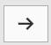

flowchart LR A(Analyses) -.-> B(Exploration) -.-> C(Descriptives)
11 LAB II: Descriptive Statistics
When we have finished this Lab, we should be able to:
In this Lab, we will use the data from arrhythmia dataset that we have already downloaded in our PC. (Note: This starts by assuming we know how to get data into Jamovi).
11.1 Summarizing Categorical Data (Frequency Statistics for one categorical variable)
Consider the binary sex variable in arrhythmia dataset. A simple way for summarizing the data is to create a table that shows the number of times each category has been observed.
Firstly, we add labels to numerically coded values of sex variable (see Chapter 10) (0 = male, 1 = female).
On the Jamovi top menu navigate to
as shown below in ?fig-descriptives1.

The Descriptives dialogue box opens, as shown below Figure 11.1:

Transfer the sex variable from the left-hand pane into the Variables pane by highlighting the variable and pressing the Arrow Button (). Alternatively, drag and drop the variable. Next, we tick the “Frequency tables” box and we also uncheck all the other options of descriptive statistics. We will end up with the following screen (Figure 11.2):
{kind=link}

The output should look like the following:

The percentage of female patients (55%, 249/452) is larger than the percentage of male patients (45%, 203/452) in our data.
To generate a basic descriptive plot navigate to the Plots section and check the Bar Plot, as shown below (Figure 11.4):

The bar plot produced here presents the absolute frequencies (counts) (Figure 11.5).

More descriptive plots are available for all data types using the surveymv and JJStatsPlot modules.
11.2 Summarizing Numerical Data
From the top menu navigate to:
flowchart LR A(Analyses) -.-> B(Exploration) -.-> C(Descriptives)
as shown in ?fig-descriptives1.
Now, drag and drop the variables age and QRS into the empty Variables box, as shown below (Figure 11.6):

Next, we decide how to display our data tables. We have got the following two options:
Variables across columns
Variables across rows
Let’ select variable across columns (the default).
We can now select the relevant descriptive statistics in the Statistics section:

Once we have selected our descriptive statistics, a table will appear in the output window on our right, as shown below (Figure 11.8):

For continuous data we can select Histograms, Box Plots, Violin and Data as shown below:


Age is a symmetrical distribution.


QRS is an asymmetrical distribution (the data are skewed to the right).